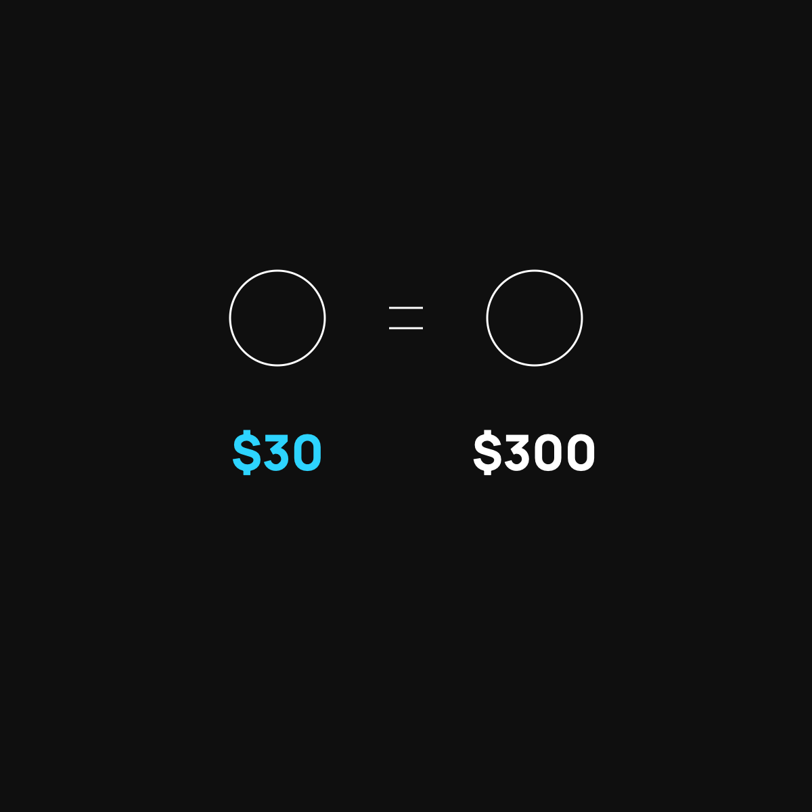

Why the Same Blood Test Costs $30 or $300
Same test, ten times the price. It's not the test. It's the billing.
The same blood test costs $30 in one place and $300 in another because there's no single real price in medical care, just a menu. Hospitals set sky-high sticker prices for haggling with insurers, a hospital lab charges far more than a standalone lab, and cash often beats insurance. Ask the price first and pick the cheaper chair.

The same simple blood test can cost you thirty dollars in one place and three hundred in another. Not a better test. Not a fancier needle. The exact same thing, at ten times the price.
That sounds insane, so let's make sense of it with something you already know.
Two people, same plane, different fares
Picture two passengers on the same flight, in the same row, in identical seats. One paid ninety dollars. The other paid four hundred. Same seat, same flight, wildly different price. Why? Because there's no single "real" price for that seat. It changes based on when you booked, how you booked, and what deal was in play.
Medical prices work the same way. There's rarely one honest price for a blood test. There's a whole menu of prices, and which one you get depends on things that have nothing to do with the test itself.
Where the price actually comes from
A few plain reasons the same test swings so much:
- The starting "sticker" price is made up. Hospitals keep a master list of prices that are wildly high on purpose. It's a starting point for haggling with insurance, not a real number anyone should pay.
- Where you go matters more than what you get. The same blood draw done at a big hospital often costs far more than at a standalone lab down the street. Same test. The hospital just has a bigger price tag on the door.
- Cash can beat insurance. Sometimes paying cash is cheaper than running it through your insurance, because the cash price skips all the paperwork and haggling. (More on that in The Cash Price Secret.)
None of this is really about your health. It's about billing. And billing, as I wrote in Nobody Gets Paid to Make You Well, follows its own strange rules.
How to pay the $30 version
You have more power here than you think. A few simple moves:
- Ask the price before, not after. "What will this cost me?" is a normal, fair question. Ask it before they draw the blood.
- Ask for the cash price too. Then compare it to what you'd pay with insurance and pick the smaller one.
- Use a standalone lab when you can. For routine tests, a dedicated lab is often far cheaper than the hospital for the identical result.
That's it. You're not being difficult. You're just refusing to overpay for the same seat.
The takeaway
The same blood test costs thirty or three hundred dollars for the same reason two people pay wildly different fares for the same airplane seat. There's no single real price, just a menu, and where and how you buy decides what you pay. Ask the price first, ask for cash, and choose the cheaper chair. It's the same flight either way.
Questions I get about this
Why do hospitals charge so much more than a standalone lab?
Same test, bigger price tag on the door. Hospitals keep a master list of inflated prices meant as a starting point for haggling with insurance companies. A dedicated lab down the street doesn't carry that overhead, so for routine tests it's often far cheaper for the identical result.
How do I find out what a blood test will cost before I get it?
Ask. "What will this cost me?" is a normal, fair question, and you should ask it before they draw the blood. Then ask for the cash price too and compare it to what you'd pay with insurance. Pick the smaller one.
Is it cheaper to pay cash for lab work?
Often, yes, especially while you're still under your deductible. The cash price skips the paperwork and haggling that inflate the insurance price. Here's exactly how to ask for the cash price.

Written by David Dewese
Normal guy with a full-time job, wife, and kids. Spent twenty years pursuing music and creative ventures before starting a family. Sharing tips and tricks on how to thrive while living on an artist's income. Not a financial advisor. More about me.
New here?
Normaltown USA is plain-English money and healthcare help for normal people, written by a regular guy with a family of four. No jargon, no hype. Start here, or read the FAQ.